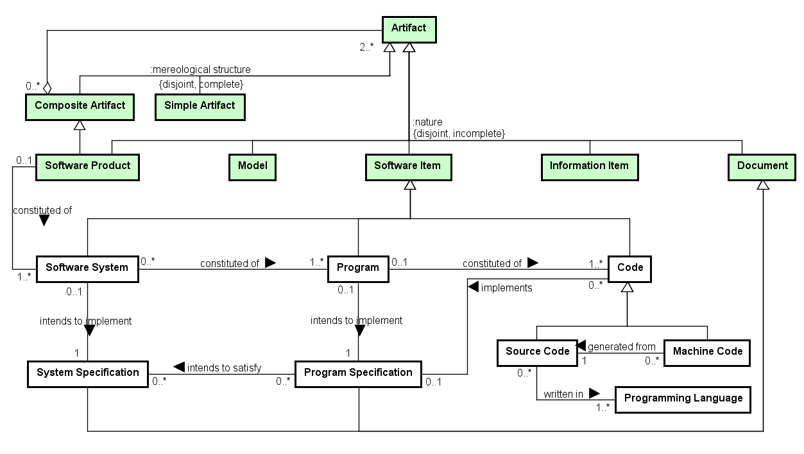

or other translator.
Networked ontologies used by SwO:
| Ontology | Relation | Integration Level |
| SPO - Software Process Ontology |
Figure 1 presents the conceptual model of the SwO.

Figure 1. SwO conceptual model.
The Software Ontology (SwO) captures that software products have a complex artifactual nature, being constituted of software artifacts of different nature, including software systems, programs and code.
The following table shows the definitions for SwO concepts.
| Concept | Definition |
| Code
|
Software Item representing a set of computer instructions and data definitions expressed in a programming language or in a form output by an assembler, compiler, or other translator (SEVOCAB).
|
| Machine Code
|
Computer instructions and data definitions expressed in a form output by an assembler, compiler, or other translator, which can be recognized by the processing unit of a computer machine.
|
| Program
|
Software Item which aims at producing a certain result through execution on a computer, in a particular way, given by the Program Specification. A Program is constituted by code, but it is not identical to code. Code can be changed without altering the identity of its program, which is anchored to the program's essential property: its intended specification (Program Specification).
|
| Program Specification
|
A document that describes the purpose (structure and functions) of a program in sufficient detail to permit coding and to facilitate maintenance.
|
| Programming Language
|
A language used to express computer programs.
|
| Software System
|
Software Item that aims at satisfying a specification (System Specification), concerning a desired change in a data structure inside a computer, abstracting away from the behavior.
|
| Source Code
|
A well-formed sequence of computer instructions and data definitions expressed in a programming language, in a form suitable for input to an assembler, compiler, or other translator. |
| System Specification
|
|
<<subkind>>Code |
Code (0..*) implements (0..1) Program Specification
Code Documentation changes Code
Code Development creates Code
Code Review uses Code
Program (0..1) constituted of (1..*) Code
<<subkind>>Machine Code |
Machine Code (0..*) generated from (1..1) Source Code
<<subkind>>Program |
Program (0..1) constituted of (1..*) Code
Program (0..1) intends to implement (1..1) Program Specification
Program (0..*) implements (1..*) Software Function Universal
Program (0..*) \intends to satisfy (1..*) Requirement Artifact
Loaded Program Copy (0..*) materialization of (1..1) Program
Software System (0..*) constituted of (1..*) Program
<<subkind>>Program Specification |
Program Specification (0..*) intends to satisfy (0..*) System Specification
Program Specification (0..*) intends to satisfy (1..*) Requirement Artifact
Program Specification (0..*) describes (1..*) Software Function Universal
Code (0..*) implements (0..1) Program Specification
Program (0..1) intends to implement (1..1) Program Specification
<<kind>>Programming Language |
Source Code (0..*) written in (1..*) Programming Language
<<subkind>>Software System |
Software System (0..*) constituted of (1..*) Program
Software System (0..1) intends to implement (1..1) System Specification
Software Product (0..1) constituted of (1..*) Software System
<<subkind>>Source Code |
Source Code (0..*) written in (1..*) Programming Language
Machine Code (0..*) generated from (1..1) Source Code
<<subkind>>System Specification |
Program Specification (0..*) intends to satisfy (0..*) System Specification
Software System (0..1) intends to implement (1..1) System Specification